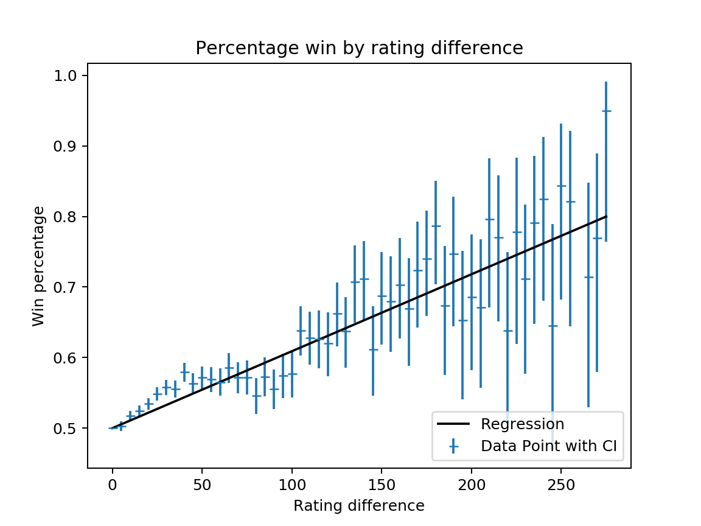
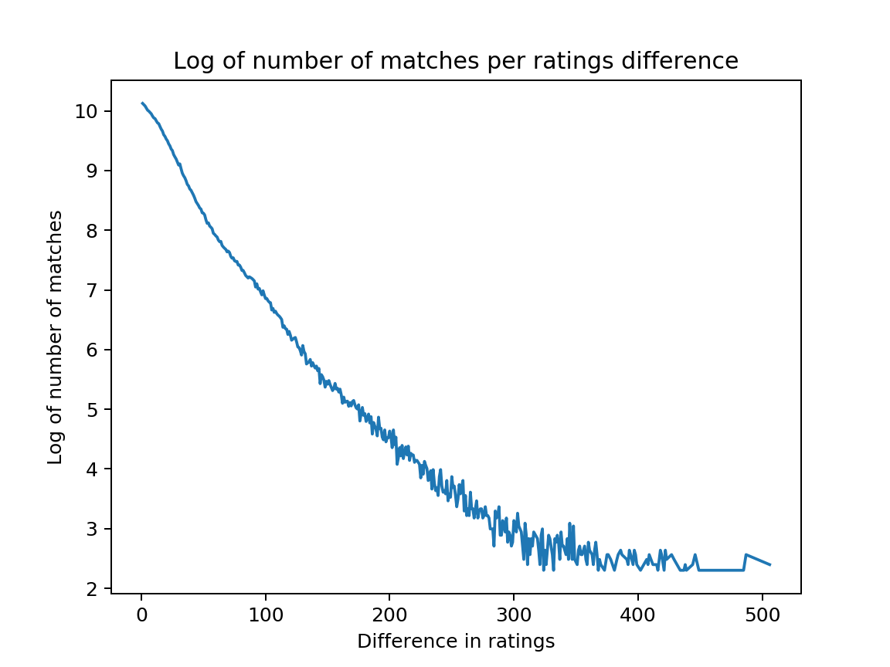

Age of Empires II Definitive Edition (AOE2 DE) is a real-time strategy (RTS) game in which each player controls the economic and military activity of a "civilization" in competition (and possibly cooperation) with another player or group of players. In this paper, I will be looking only at one-on-one (1v1) matches in the "ranked" queue. After ten matches of online competition in this queue, a player is assigned a rating. This rating may change after any given match based on whether the player won and the player's rating compared to the other player's rating. The question this paper asks is whether (and if so, by how much) a user's relative rating affects the likelihood of victory.
Note: the code for downloading the data, all subsequent data manipulations and statistical calclations, and map and table generation is available at the github repository hosting this page.
The website AoE2.net hosts an api from which anyone can download match, rating, and player data. Starting with all the players listed in the 1v1 ranked "leaderboard" on 21 May 2020, I downloaded all of the match information and historical rating changes of each user and all the match and historical rating changes of each of that player's opponents recursively until no new players were added. Match information does not include which player won the match, so I extrapolated this information from the historical rating changes data, which holds this information (matching requires extrapolation via this algorithm as there is no key between one and the other).
Data is incomplete, with some matches having rating data from only one player, and a very few matches had data that contradicted each other. The percentage of contradictory records (generated thus) is sufficiently small for me to feel confidence in even the data from only one player.
| Number of Matches | Proportion of Matches | |
|---|---|---|
| Confirmed | 503,972 | 0.552 |
| One Player Only | 404,968 | 0.443 |
| Contradicted | 4,261 | 0.005 |
| Total | 913,201 | 1.000 |
Removing the contradictory records, I randomly divided the match record data into three buckets: 'model' (80%, n = 765,184), 'test' (10%, n = 95,587), and 'verification' (10%, n = 95,630).
Looking at the sample data, and removing all records in which ratings were equal (hence n = 752,281), I found that players with a superior rating won 54% of the matches (with 5% confidence interval of .001), which confirms that ratings do matter. (n.b.: The test and verification data sets also had 54% of wins given to the higher rated player.) The next question is how much?
In exploratory graphs, it appears that the relation between difference in rating and likelihood of a win is linear. Statistical analysis reveals an r score of .96 and a slope of .0011 for both model and verification data sets. The figure below (Percentage win by rating difference generated thus) shows the percentage win for rating difference (only every fifth for legibility) along with its confidence interval as data points, as well as the regression line.
As we can see from the graph, the confidence interval increases as the difference in rating increases. This is because the matchmaking algorithm attempts to match players of similar levels. The figures Rating difference per number of matches and Log of rating difference per number of matches (generated thus) show the distribution of ratings differences, which is exponential (r score of log is -0.95 for both model and verification data sets computed as above). Note: for legibility, only rating differences greater than 10 are shown.
The AOE2 DE rating system strongly correlates win likelihood with rating difference in a linear fashion, with a roughly 1.1% greater chance of winning for every 10 rating points difference.